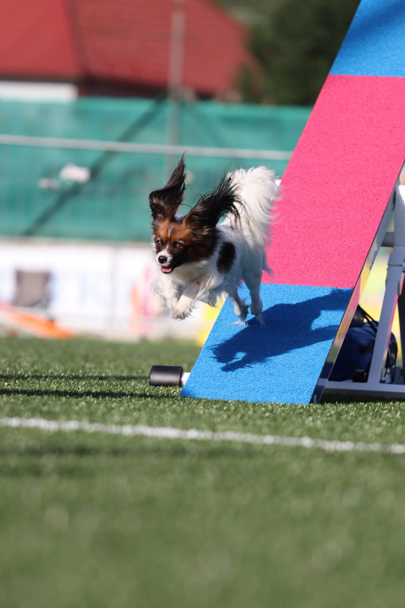
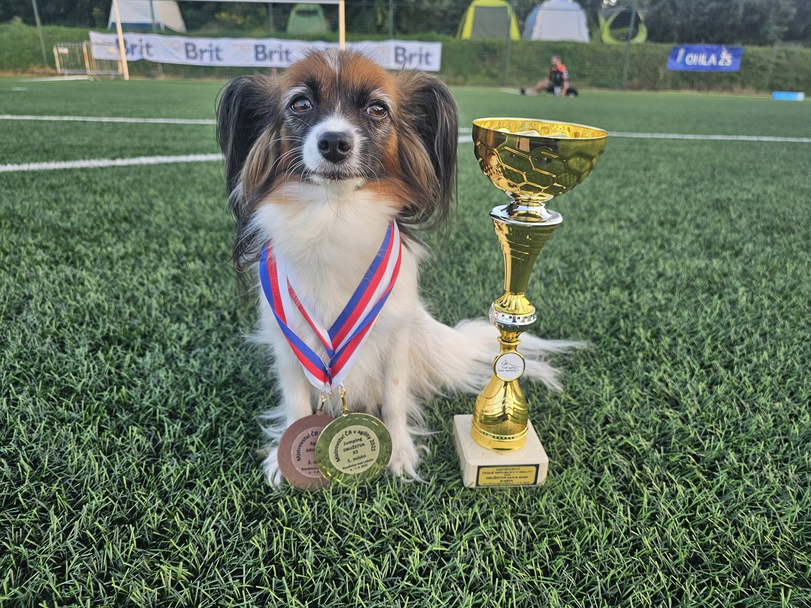

Skupinové tréninky agility pod vedením zkušených trenérů. Přihlášení jednoduše přes rezervační systém — vyberete si termín a jdete trénovat.


Agility aktivně závodím od roku 2018 se svými papilony a border kolií. Mezi mé úspěchy patří titul 1. vicemistr ČR v agility v družstvech (2025, 2026) a druhé a třetí místo z mistrovství Slovenska papillonů.
Základy bezpečně a s radostí: motivace psa, první překážky, správné návyky od začátku. Pro psy všech plemen a velikostí. Maximálně 3 psi na hodinu.
400 Kč / pes / hodina
Termíny v rezervačním systému →Sekvence, vedení psa, upevnění zón a slalomu. Malá skupina s individuální zpětnou vazbou. Maximálně 3 psi na hodinu.
400 Kč / pes / hodina
Termíny v rezervačním systému →Trénink šitý na míru přesně tomu, co potřebujete posunout — tempo i obsah určujete vy.
1 200 Kč / hodina · 600 Kč / 30 minut
Domluvit termín →Ing. Jitka Ďuricová — mentální koučka. Pracuji s myslí: pomáhám lidem zvládat tlak, trému a soustředění v situacích, kdy jde o výsledek. Vedu skupinové workshopy a pracuji individuálně — s technikami, které používají sportovci, manažeři i obchodníci. Sama aktivně závodím, a klid, se kterým stojím na startu, není povaha ani náhoda: je to natrénovaná dovednost. A přesně tu vás naučím.
Skupinový workshop pro závodníky: co rozhoduje na startu — klid, soustředění, zvládnutí nervozity a souhra se psem. Praktická cvičení, která použijete hned na dalších závodech.
Termíny a cenu vypisujeme průběžně
Sledujte rezervační systém →Sezení jeden na jednoho, šité na míru vám a vašim startům: práce s nervozitou, soustředění, vnitřní řeč, příprava na konkrétní závod.
1 500 Kč / hodina · Praha · Ústí nad Labem · online (Zoom)
Domluvit termín →Jste trenér/ka agility (nebo jiného psího sportu) a hledáte zázemí pro své skupiny? Nabízíme férové podmínky pro pravidelné tréninky ve špičkové hale — pevný termín na celou sezónu a podporu s propagací. Napište nám, domluvíme spolupráci.